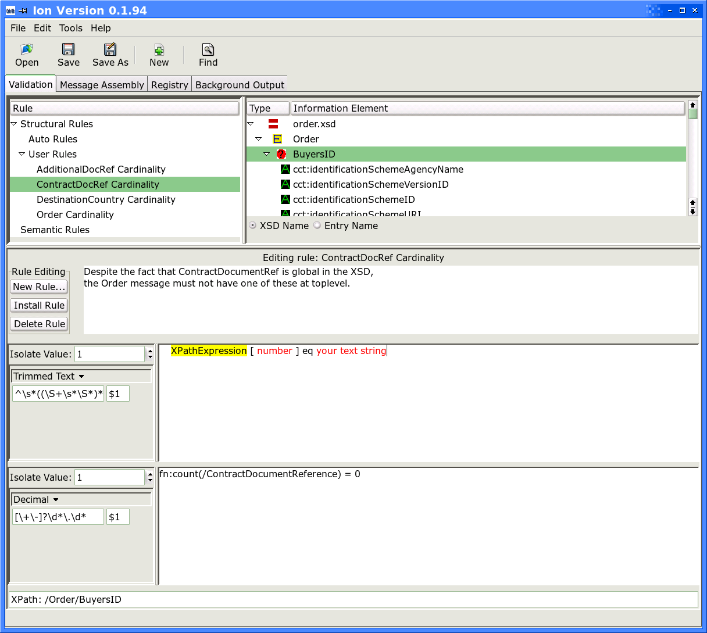

Screenshots: cells-gtk on Linux
and some other OS...
An actual application (not part of the demo).
This will be available on sourceforge sooner or later. Here are some of the demo.
The demo builds when you compile cells-gtk. Thanks again to Klaus for sending along the Linux versions, the topmost (or leftmost if you make your window wide enough to view two-up) of each pair.If you'd like to test drive a Win32 .exe of a completed cells-gtk application, there is one here. If you have screenshots of your work you'd like share, send them to the project mail list.
Peter Denno Last modified: 2006-03-17